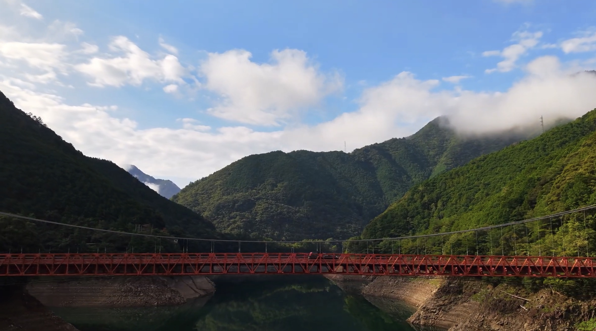

We're glad you're here. Explore and enjoy your visit.
Looking for a destination to travel near you? Type a country name below to search.

Stories Behind Photos
What is Travel? Travel is much more than moving from one place to another. It is an opportunity to explore the world, experience different cultures, meet new people, and learn from new environments. Every journey offers something unique, whether it is a beautiful landscape, a historic landmark, a local tradition, or a simple moment that becomes a lasting memory. Traveling helps us understand the diversity of the world and appreciate the beauty that exists in different places.
Photography plays an important role in preserving these experiences. While a photo captures a single moment in time, it also represents the emotions, memories, and experiences connected to that moment. Every photograph has a story behind it—a place that was explored, a person who was met, a challenge that was overcome, or a memory that remains special. Looking at a photo allows us to remember not only what we saw, but also how we felt during that journey.
This website is dedicated to sharing my travel experiences through the places I have visited and the photographs I have taken. Each destination featured here has its own unique character and story, and every photo reflects a meaningful part of my journey. My goal is to document these experiences, preserve the memories, and share the beauty of different places with others. I hope this collection of photos and stories inspires visitors to appreciate the value of travel, discover new destinations, and create meaningful memories of their own.